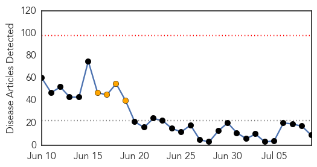
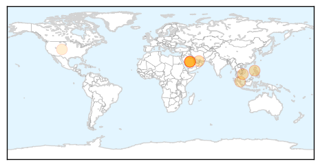
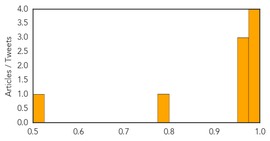

MERS
30-Day Web Trend
0 alerts, 4 warnings

30-Day Twitter Trend
2 alerts, 0 warnings

Article Locations
Article Confidences
Top Articles:
- 0.986
- MERS Fast Facts
- 0.986
- 14 close contacts of foreigner with MERS-CoV home quarantined
- 0.979
- Health Ministry inspects MERS-CoV preventive measures in Can Tho — Talk Vietnam
- 0.975
- No new suspected MERS cases
- 0.971
- Philstar Mobile
- 0.966
- From the Center with Rolly Espina
- 0.965
- 14 contacts of foreigner with MERS quarantined
- 0.798
- Man with MERS travelled through Singapore before developing symptoms
- 0.513
- National Pork Board cites rapid, accurate diagnostics as integral to the success, effectiveness of the Swine Health Information Center
Top Tweets:
-
No tweets found for Jul 09, 2015
Meningitis
30-Day Web Trend
3 alerts, 0 warnings

30-Day Twitter Trend
0 alerts, 0 warnings

Article Locations

Article Confidences

Top Articles:
- 0.971
- Quarantine rules for Haj pilgrims unveiled
- 0.962
- The Post
- 0.936
- Kabompo school meningitis outbreak mishandled
- 0.756
- Guidance on new meningitis vaccine leaves choice to parents; • Experts disagree on who should be able to receive the vaccine
- 0.717
- Hand, Foot and Mouth Disease
- 0.660
- Brain-Eating Amoebas Have Struck Again in Minnesota
- 0.639
- We need to early diagnose TB and treat with drugs that work
- 0.623
- DonutGate 2015: Ariana Grande's Donut-Licking Incident Was Gross, But Is It Really A Public Health Concern?
- 0.513
- Meningitis vaccination mandatory for Haj visa
Top Tweets:
-
No tweets found for Jul 09, 2015